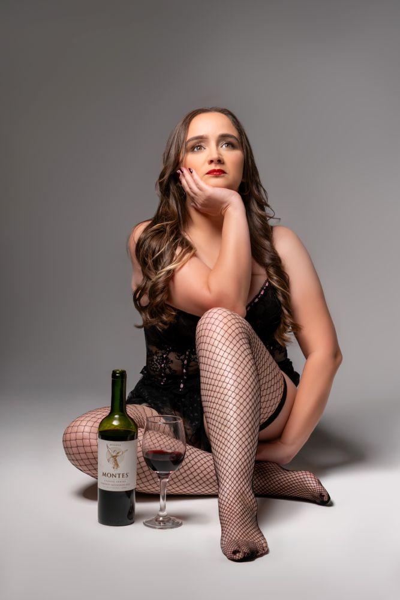
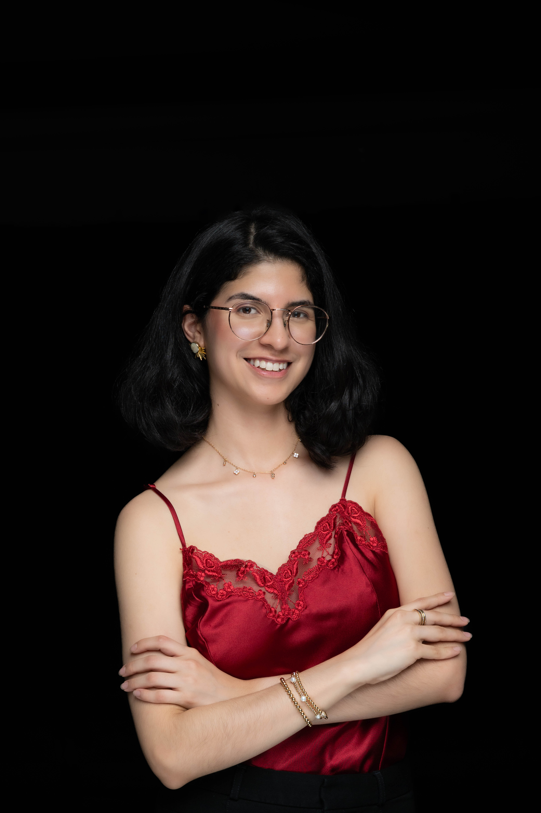

Sesiones boudoir exclusivas en San Pedro Sula
Un fin de semana para reencontrarte contigo.
15 y 16 de agosto · Cupos limitados
No necesitas saber posar, tener experiencia frente a una cámara ni cumplir con un estándar de belleza. Solo necesitas regalarte un momento para verte con otros ojos.
Reservar mi sesiónMás que una sesión de fotos, vivirás una experiencia diseñada para ayudarte a reconectar contigo, celebrar una etapa de tu vida o simplemente recordarte lo increíble que eres.
¿Qué es una sesión boudoir?
No se trata de lencería. Se trata de confianza.
Una sesión boudoir es una experiencia íntima y personalizada donde creamos fotografías elegantes, femeninas y auténticas.
Cada sesión está guiada paso a paso para que te sientas cómoda, segura y disfrutes el proceso, incluso si es tu primera vez.
No buscamos que seas alguien diferente. Queremos mostrar la versión de ti que quizá hace mucho no ves.


¿Es para mí?
Sí, especialmente si...
Qué incluye la experiencia
Cada sesión incluye
Todo está pensado para que llegues tranquila, sepas qué hacer en cada momento y puedas verte desde una mirada cuidada, femenina y editorial.
Guía de poses durante toda la sesión para que no tengas que improvisar.
Te ayudo a elegir atuendos y accesorios antes de tu fecha.
Un espacio seguro, cuidado y pensado para que puedas soltarte.
Acabado profesional estilo revista en tus fotografías elegidas.
Selecciona tus fotografías favoritas desde una galería personal.
Paquetes
Elige cómo quieres vivir la experiencia.
Tu cupo se reserva con L1,500. Este monto se descuenta del total de tu paquete.
Mini
Perfecto para vivir tu primera experiencia boudoir.- 8 fotografías digitales
- 30 minutos de sesión
- Un atuendo y accesorios
- Edición profesional estilo revista
- Guía completa de poses
- Consulta previa gratuita
Esencial
Nuestro paquete más elegido para quienes desean explorar la experiencia con más tiempo y variedad.- 12 fotografías digitales
- 1 hora de sesión
- Dos atuendos y accesorios
- Edición profesional estilo revista
- Guía completa de poses
- Consulta previa gratuita
Glow
La experiencia más completa para crear una colección que refleje todas tus facetas.- 20 fotografías digitales
- 1 hora y media de sesión
- Atuendos ilimitados
- Edición profesional estilo revista
- Guía completa de poses

Sobre mí
Hola, soy Stephany.
Soy la fotógrafa detrás de La Carolina Photo.
Creo profundamente que todas las mujeres merecen verse desde una perspectiva diferente: con amor, fuerza y admiración.
Mi trabajo no consiste solo en tomar fotografías. Consiste en crear un espacio donde puedas sentirte libre, segura y hermosa, sin importar tu edad, talla o experiencia frente a la cámara.
Cada sesión está pensada para que salgas con algo más que imágenes: una nueva forma de verte.
Preguntas frecuentes
Tus dudas, respondidas.
Claro. La mayoría de las mujeres que fotografío nunca habían hecho una sesión antes. Durante toda la experiencia te guiaré paso a paso.
No necesariamente. Puedes usar lencería, un body, una camisa blanca, un suéter tejido o cualquier prenda con la que te sientas cómoda. Durante la consulta previa te ayudaré a elegir las mejores opciones.
Sí. Tu privacidad siempre será respetada. Ninguna fotografía se publica sin tu autorización.
Puedes reservar tu cupo con un anticipo. Una vez confirmada tu reserva recibirás toda la información para preparar tu sesión.
San Pedro Sula · 15 y 16 de agosto
Tu mejor momento no empieza cuando cambias tu cuerpo. Empieza cuando cambias la forma en que te ves.
Este 15 y 16 de agosto estaré en San Pedro Sula por tiempo limitado. Los cupos son reducidos para brindar una experiencia completamente personalizada.
Reservar mi sesiónSi prefieres contactarme directamente, escríbeme por WhatsApp.